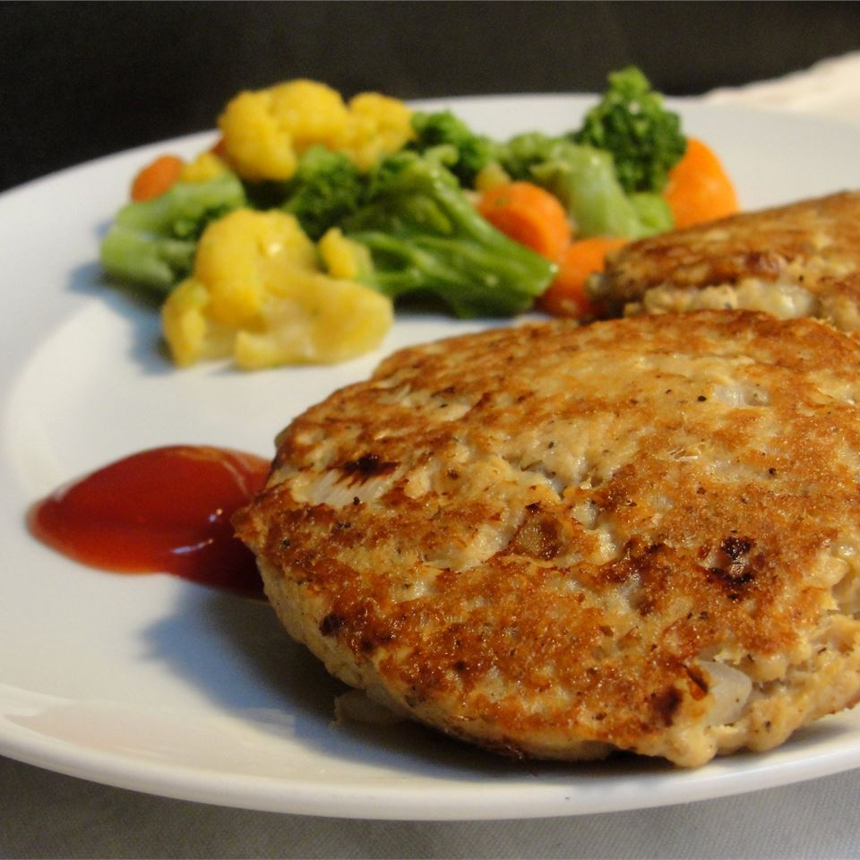
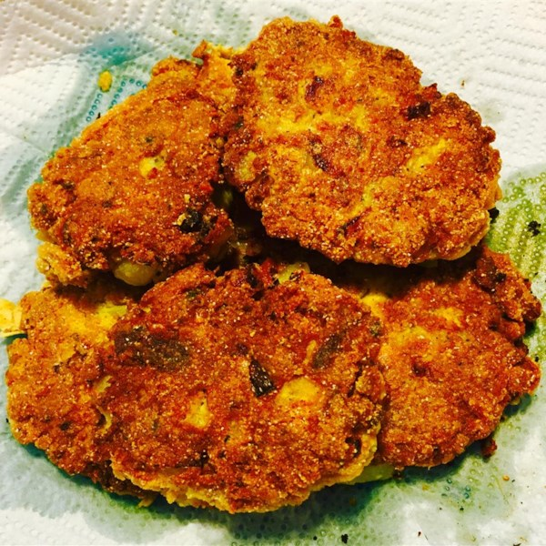

Grandma's Famous Salmon Cakes


This is a recipe for my Grandmother's famous salmon cakes. It is a family recipe that has been
passed down through generations.
Serve with macaroni and cheese or any other type of side dish.
Serves 3-4 people.
Ingredients
- one (1) can salmon, drained and flaked
- two (2) eggs, beaten
- one (1) onion, diced
- one (1) teaspoon ground black pepper
- three (3) tablespoons vegetable oil
Steps
- Pick through the salmon and remove any bones.
- In a mixing bowl, beat the eggs and add the diced onion, salmon and pepper.
- Mix thoroughly.
- Shape into 2 once patties; about 7 or 8 patties.
- In a large skillet over medium heat, heat the oil.
- Fry each patty for 5 minutes on each side or until crispy and golden brown.